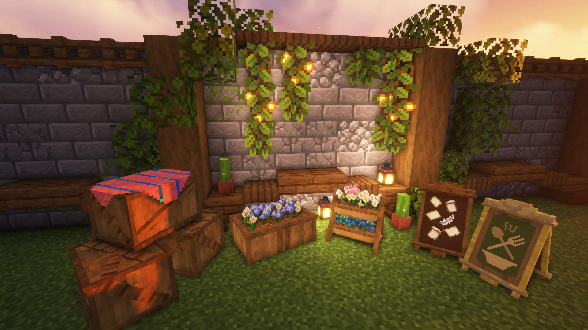
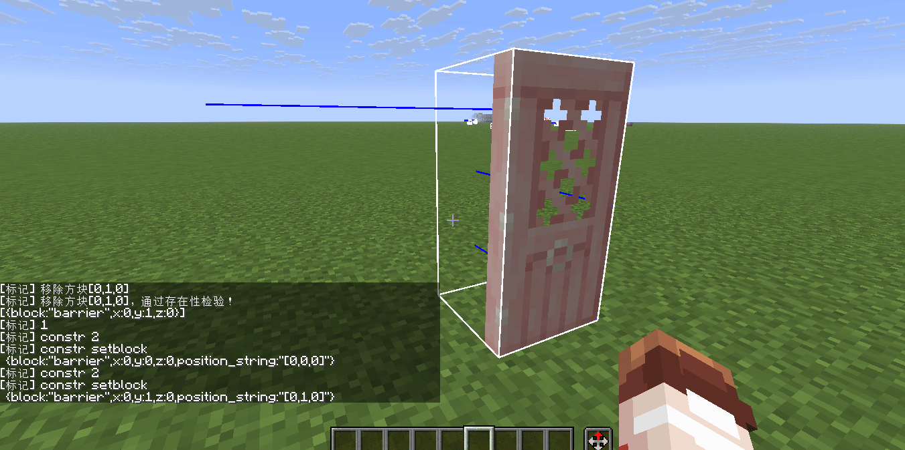
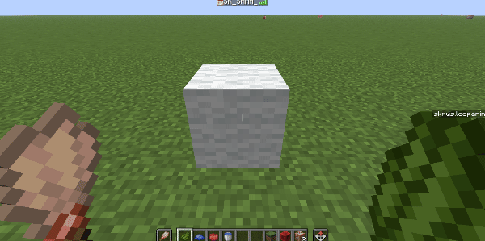

像写诗一样制作可交互模型

本项目名为SK Model
Workspace(模型工作空间)，旨在通过简单的方式，创建可交互，可复用的模型。同时具有丰富的接口和较强的可拓展性
由于作者一直在咕咕咕，导致该项目有很多坑没有填，如果你正在香草图书馆浏览本页面，可以点这里访问该文章的原始页面，文章将在原始页面继续保持更新，之后会添加更多有用的功能
之后我也会制作一些基于该数据包的原版家具，（然而我并不会建模，所以做的不怎么好）
- 运作方式：原版游戏,数据包
- 支持版本：1.21.8
本文将详细介绍该数据包的功能，并且提供一些案例教程方便读者理解
有什么问题或建议可以直接在b站或QQ上联系我哦
数据包下载
依赖关系
- (数据包) SK Model Workspace
- (前置数据包) SK API
概述
什么是“可交互模型”呢
玩家对模型进行一定操作，模型对操作进行反馈，具备这种特征的模型可以称作“可交互模型”，比方说有一个椅子，玩家左键点击即可将其破坏，右键点击可以坐到上面。其中“左键点击”和“右键点击”即为操作，“破坏”和“坐”即为反馈，此时，这个椅子就是一个“可交互模型”
展示实体与交互实体在1.19.4版本被加入，为原版开发者们提供了诸多便利，也为找到“可交互模型”的简单实现方式带来了可能性，这一领域目前已有许多优秀的作品：
该如何实现呢
在SK Model Workspace中，每一个可交互模型都由一个Marker，一个或多个展示实体与交互实体组成，其中交互实体用于接收玩家的操作，然后Marker将作为执行者执行事先设定好的事件，最终展示实体给予一定反馈
交互实体接收到玩家的操作以后，需要告诉Marker让其作为执行者，但是如何让交互实体找到Marker呢，一种方法是让交互实体作为Marker的乘客，交互实体可以使用execute on vehicle找到Marker，但是这样做很显然有一个问题：假如有不止一个展示实体，让它们都作为Marker的乘客，那么这些展示实体就无法分别设定自己的坐标。显然这是不合适的
另外一种方法是，在模型被创建的之时，将展示实体和Marker的UUID存入storage中，展示实体只需要查找表即可找到Marker
现在Marker成为了执行者，它可以操作所有的交互实体，这又该如何实现呢？其实也不难，我们将一个模型中所有的展示实体与交互实体称为该模型的元素(element)，为每一个元素设定一个不重复的元素ID，然后在Marker中存储所有元素的元素ID和UUID，Marker可以通过给定元素ID来查找该元素的UUID，从而对该元素执行操作
sequenceDiagram 玩家->>交互实体: 玩家点击交互实体 交互实体->>Marker: 查找表，找到Marker的UUID Marker-->>展示实体1: 通过元素ID查找UUID Marker-->>展示实体2: 通过元素ID查找UUID
此外，SK Model Workspace还支持给模型配置方块，模型本身是没有碰撞体积的。可以配置屏障方块来给模型添加碰撞体积。也可以配置光源方块，让模型发光。 同时为了不影响世界中已经存在的方块，在模型被创建时，会检查目标位置的方块是否为空气，如果是，配置好的方块才会被放置
模型类
模型类格式
在SK Model Workspace中，模型是以类的形式定义的
1 | data modify storage skmws reg.class.<类名> set value <模型数据> |
<模型ID> 模型的ID，这是唯一的
<模型数据> 一个包含该模型所有数据的复合标签,格式如下
- (根标签)
- abstract (可选)指明该模型类是否为抽象类
- extends (可选)一个类名，该模型类的父类
- elements 元素列表
- (一个元素)，详见：元素格式
- marker_merge (可选)合并数据至该模型的标记实体，详见：Wiki:Marker
- blocks (可选)方块列表
- (一个方块)
- position 方块的相对位置
- block 方块ID
- (一个方块)
- events (可选)该模型的私有事件列表
- anim
(可选)该模型的私有动画
- (动画ID) (可选)一个自定义动画，详见：动画格式
- properties
(可选)该模型的动态配置
- permission (可选)模型的操作权限，详见：权限控制
- playsound_on_place (可选)该模型被实例化时播放的声音
- (一个自定义项目)
- align_position (可选)对齐坐标，若无该项则不进行坐标对齐，列表中有三个数，对应XYZ三轴，实际坐标为不大于当前坐标且能被该值整除的最大数字，填入-1则表示不对该轴坐标进行对齐，示例：[1,-1,1]表示XZ轴对齐方块网格，Y轴不进行对齐
- align_rotation (可选)约束偏航角，若无该项则不进行偏航角约束，示例：输入90代表实际偏航角被约束至东南西北四个方向之一，输入45代表实际偏航角被约束至八个基本方向
- lock_rotation (可选)锁定旋转角，让旋转角恒为指定值，如果该项与align_rotation同时存在，则优先使用该项
元素格式
我们将一个模型中的展示实体与交互实体统称为这个模型的元素，每一个元素都有一个在本模型类中唯一的元素ID
- (一个元素)
- id 元素ID，元素列表中所有元素的ID不能重复
- type
实体类型，可选值为item_display，text_display，block_display，interaction
当type:"interaction"时 - criteria
- merge (可选)合并数据至该元素，详见：Wiki:交互实体
- position
(可选)该元素的局部坐标
当type:"item_display"或type:"text_display"或type:"block_display"时 - merge (可选)合并数据，详见：Wiki:展示实体
- position (可选)该元素的局部坐标
- rotation (可选)该元素的相对旋转角
模型类的动态配置
模型的动态配置数据存储在properties中，什么是动态配置呢？模型在使用过程中可能存在存取一些变量的需求，这些变量就是动态配置，动态配置可以在模型被实例化后更改并立即生效，例如操作权限permission，也是可以在模型被实例化后更改的，本数据包的一些内置功能也依靠动态配置实现
模型类的继承
模型类跟java中的类比较相似，同样支持多层继承，继承可以提升代码的复用性和扩展性
这里举一个例子：我们要制作「门」，门的种类有很多「橡木门」，「白桦木门」，「金合欢木门」... 你可能会想到给每种门分别创建模型类，不过呢，这样做的话会产生相当多的冗余代码，因为任何一扇门都支持「开门」，「关门」等操作，而这项操作在每种类型的门的模型类中都写了一遍，虽然这样做也没什么问题无非多写了一点代码，我复制粘贴不就行了吗（笑），但是如果某一天要升级「开门」，「关门」等操作的相关代码，需要修改每一个类中的相关代码，这实在是太麻烦了
于是聪明的你想到可以先创建一个「门」类，在「门」类中写上「开门」，「关门」相关代码，然后让「橡木门」类，「白桦木门」类，「金合欢木门」类 ... 都继承自「门」类，这样每一个继承自「门」类的类都拥有了「开门」，「关门」操作，接下来要做的只是在每一个子类中单独定义例如材质，模型，音效等子类特有内容即可
SK Model Workspace按照以下方式处理类的继承，对处理好的数据进行临时存储，方便下次取用
- 检查当前模型类的extends字段，如果存在的话，则对模型类继承进行以下处理，如果父类也继承自某个类，将对父类进行递归处理
- 合并(merge)子类与父类的除elements以外所有数据
- 在elements中，子类中与父类中id相同的元素进行合并，其余ID仅存在于父类或子类中的元素的数据则全部保留
此外，父类中的数据可能是残缺的，必须经过子类的补充才可以被实例化，为了避免这种父类被误实例化而造成未知错误，可以添加abstract: 1b字段将该类声明为抽象类，抽象类不可被实例化
实例化模型类
什么是“实例化”呢，实例化确实是一个很抽象的概念，不过在这里你可以简单理解为把创建好的模型类摆出来，可以想象一下，你拿着一个方块对着地面点击右键，方块就被放在了地面上，这可以被认为是一种实例化
SK Model Workspace提供多种实例化模型类的方式
通过类名
(execute) as 将作为该模型的拥有者1
function skmws:construct {class:"<类名>"}
(execute) positioned 模型的创建位置
(execute) rotated 模型创建时的旋转角通过传入完整的模型类数据
(execute) as 将作为该模型的拥有者1
function skmws:construct_with
(execute) positioned 模型的创建位置
(execute) rotated 模型创建时的旋转角
storage skmws temp.input 输入一个完整的模型类数据通过Marker（供内部使用，不建议直接调用）
生成一个带有如下数据的Marker，Marker的位置和旋转角将被应用于模型创建
- Tags:["skmws.construct"]
- data
- input 一个类名，或者一个完整的模型类数据
然后执行这个命令
该命令会处理距离执行者最近的带有skmws.construct标签的Marker
1
function skmws:_private/_player_detect
条件列表
概述
条件列表位于模型类中的interaction元素的criteria标签中，这个标签里的leftclick和rightclick就是条件列表，比方说当玩家左键点击了这个交互实体，则会执行leftclick标签中的条件列表
为了解释清楚条件列表是干什么用的，举个例子：假设有一只羊，你可以手持小麦给羊喂食，或者手持染料给羊染色，手持剪刀给羊剪毛。像这种在不同情况下执行不同操作的行为可以通过条件列表实现
在SK Model Workspace中，条件列表将按照以下方式处理
- 依次检查条件列表中每一个项目
- 直到找到一个项目，该项目中的条件检查均通过，则执行该项目中的事件列表，并不再继续检查后续的项目
条件列表格式
事件列表
概述
模型被交互后执行的操作均由事件列表实现，当一个事件列表被执行时，会依次执行该列表中所有的事件，事件列表可以定义在以下几个地方
- 条件列表的event 标签中
- 模型类的 events.<事件列表ID> 标签中，此时定义的事件列表为私有事件列表，仅可被本类及其子类访问
- 存储 storage skmws reg.events.<事件列表ID> 标签中，此时定义的事件列表为全局事件列表，可以被所有模型类访问，本包的一些内置功能是使用全局事件列表实现的，详见：模块
事件列表格式
事件列表的执行者为该模型的Marker
可以使用@a
[tag=skmws.s]来指定正在执行交互操作的玩家
- (一个事件列表)
- (一个事件)
- type 事件类型
- 该事件的额外参数（见下文）
- (一个事件)
# 破坏
当type:"remove"时，移除该模型，同时触发on_remove私有事件列表
当type:"destroy"时，破坏该模型，同时触发on_remove私有事件列表破坏模型产生的效果定义在模型类的动态配置中，格式如下
- (模型类根标签) 详见：模型类格式
- properties
- destroy
存储模型被破坏时产生的效果
- sound 模型被破坏时播放声音
- particle 破坏粒子，详见：Wiki:方块粒子选项
- item (可选)破坏时的掉落物，该项不存在时则不产生掉落物，该项存在时则产生掉落物，并将该项的内容合并至物品,详见：Wiki:物品格式
- destroy
存储模型被破坏时产生的效果
- properties
# 冷却
当type:"cooldown"时，设置交互冷却时间，在该时间段内模型不接受任何操作- time 冷却时间
# 坐
当type:"sit"时，让执行交互操作的玩家坐在该模型上- id 元素ID，指定让玩家坐到哪个元素上
# 调用事件列表
当type:"call"时，调用另一事件列表- with
- event 事件列表ID
- global (可选)指明调用的事件列表是否为公共事件列表
# 动画
当type:"anim"时，播放动画- with
- anim 动画ID
- global (可选)指明调用动画是否为公共动画
- loop (可选)指明该动画是否会被循环播放
- time (可选)循环播放动画时，动画播放一次所用的时间
当type:"stopanim"时，停止正在播放的循环动画
# 执行命令
当type:"cmd"时，执行指定命令- with
- cmd 要执行的命令
- key (可选)一个NBT路径，从模型的动态配置中取用值作为要执行的命令的参数
- id 元素ID，作为执行者
- with
- cmd 要执行的命令
- key (可选)一个NBT路径，从模型的动态配置中取用值作为要执行的命令的参数
# 修改元素数据
当type:"merge"时，合并数据至指定元素- id 元素ID
- data 合并数据
- id 元素ID
- key 一个NBT路径
- value 值
# 元素增删
当type:"element_append"时，添加元素- id 元素ID
- data (一个元素)
- id 元素ID
# 方块增删
当type:"block_append"时，添加方块- position 放置位置
- block 方块ID
- position 要被移除的方块的位置
# 移动模型
当type:"move"时，移动整个模型，包括所有的方块和元素需要指定position，或者同时指定facing和px
- with
- position (可选)一个三元列表，表示相对位移
- facing (可选)朝向，可选值为"N","E","S","W"
- px (可选)沿该朝向移动的像素点数
# 修改模型动态配置
当type:"properties"时，编辑该模型的动态配置- key 一个NBT路径
- value 值
# 播放声音
当type:"playsound"时，播放声音- key 一个NBT路径，从模型的动态配置中取用值作为要播放的声音
事件的函数形式
此外这些事件还有其对应的函数，调用这些函数所达到的效果与在事件列表中执行事件相同
可以在type:"cmd"事件执行的命令中使用这些函数，不能在其他的上下文中使用
格式如下： 1
function skmws:event/<事件类型> {<除type以外的参数>}
动画
概述
展示实体的transformation字段可以进行插值，我们可以利用这个特性制作简单的动画
动画可以定义在以下几个地方
- 模型类的 anim.<动画ID> 标签中，此时定义的动画为私有动画，仅可被本类及其子类访问
- 存储 storage skmws reg.anim.<动画ID> 标签中，此时定义的动画为全局动画，可以被所有模型类访问
动画格式
- (根标签)
- (一个项目)
- merge
要合并至元素的数据
- (元素ID) 要合并至该元素的数据
- delay 距离上个项目的时间，若该项目为第一个项目则可省略该项
- merge
要合并至元素的数据
- (一个项目)
关于本节内容的教程详见 教程：动画
权限控制
概述
每一个实例化后的模型都有自己的操作权限，权限信息定义在模型类的动态配置permission中
可选值和解释如下表：
| permission的值 | 权限描述 |
|---|---|
| 0 | 所有人可以访问 |
| 1 | 仅模型拥有者及其好友可以访问 |
| 2 | 仅模型拥有者可以访问 |
| 3 | 所有人不可访问 |
- 拥有者即为模型的创建者，谁实例化了这个模型，谁就是这个模型的拥有者
- 带有skmws.debug标签的玩家可以无视权限直接对模型进行操作
好友系统
这是权限控制系统的一个分支，各个玩家的好友数据存储在storage skmws friends中，目前只能通过命令操作
- friends
- (一个项目)
- UUID 玩家的UUID字符串
- friends 该玩家的所有好友
- (一个项目)
- UUID 玩家的UUID字符串
- ...
- (一个项目)
- ...
- (一个项目)
模块
概述
本包将一些常用的功能封装成了全局事件列表，我们将这些全局事件列表称为模块，模块可以在任何模型类中调用，简化了重复的操作。使用这些模块时，需要在模型类的动态配置中添加一些字段，具体内容见下文
全局事件：模型状态切换
有的时候创建的模型会有很多状态，例如门可以分为“打开”和“关闭”两种状态，蛋糕可以按食用程度分为8种不同的状态。为了简化对模型状态的处理，可以调用toggle_state全局事件列表让模型切换到下一个状态，然后自动调用该模型的私有事件列表on_state_<当前的状态> ，以完成对模型更细致的处理
全局事件列表ID：toggle_state
- (模型类根标签) 详见：模型类格式
- properties
- toggle_state
存储模型状态切换相关配置
- current_state (可选)当前状态，默认为0
- number_of_state (可选)状态的数量，默认为2
- toggle_state
存储模型状态切换相关配置
- properties
关于本节内容的教程详见 实战：更丝滑的门
全局事件：推动模型
该模块被调用时可以让模型沿玩家面向的方向移动一格，如果模型的目标位置处有方块阻挡则不移动
全局事件列表ID：push
- (模型类根标签) 详见：模型类格式
- properties
- pushable
存储推动相关配置
- playsound (可选)模型被推动时播放的声音
- pushable
存储推动相关配置
- properties
关于本节内容的教程详见 教程：推动模型
全局事件：染色与清洗
众多周知mojang给很多物品和方块都加入了16种可供选择的颜色，本数据包也提供了类似的功能
染色：全局事件列表ID：dye
清洗：全局事件列表ID：wash
- (模型类根标签) 详见：模型类格式
- properties
- dyeable
存储染色相关配置
- id 将要被染色的元素的ID
- key 一个NBT路径，模型被染色时将该值修改为指定值
- values 值列表
- default 默认颜色时，上方key中指向的的值将会被修改为该值
- (一个自定义颜色) 当模型被染成指定颜色时，上方key中指向的的值将会被修改为该值
- (可选)playsound_on_dyeing 模型被染色时播放的声音，若不指定则播放默认声音
- (可选)playsound_on_washing 模型被清洗时播放的声音，若不指定则播放默认声音
- dyeable
存储染色相关配置
- properties
该模块的配置数据存储在storage skmws config.dyeable中，可以通过修改颜色配置以适配新的颜色
- dyeable
- colors 颜色配置
- (一个项目)
- item 检查手持物品，详见：Wiki:物品谓词
- key 该颜色的键名
- color 一个三元列表，该颜色的RGB颜色值，用于显示粒子效果
- (一个项目)
- playsound_on_dyeing 模型被染色时默认播放的声音
- playsound_on_washing 模型被清洗时默认播放的声音
- colors 颜色配置
该配置的默认值如下:
默认值写在了function/cfg/config.mcfunction中
1 | { |
当全局事件列表dye被执行时，首先会检查玩家手持物品，如果在storage skmws config.dyeable.colors中定义了这个物品，则获取对应的颜色键名key和粒子颜色color，然后使用该键名去模型的动态配置properties.dyeable.values中查询一个值，使用该值覆盖掉properties.dyeable.key指向的数据的原始值，最后生成指定颜色的粒子。如果上述步骤有任意一项执行失败，则模型颜色不会改变
当全局事件列表wash被执行时，使用模型的动态配置中properties.dyeable.values.default的值覆盖掉properties.dyeable.key指向的数据的原始值
关于本节内容的教程详见 教程：染色
案例教程
例程：简单装饰模型
先从最简单的开始，简单装饰模型主要的功能是装饰，所以不需要太复杂的效果，我们需要实现的内容有这些

- 能够像方块一样放置和破坏，并且破坏时可以掉落物品
- 放置时矫正方向和偏航角
- 一格碰撞箱
模型类定义如下
1 | { |
教程：动画
使用SK Model Workspace的动画系统，可以完成一些简单的模型动画
现在我们需要制作一个铁傀儡开凿机，并循环播放开凿动画

观察一下开凿机，发现整个结构一共有5个方块，所以在模型类的elements中需要分别为这五个方块添加元素，元素ID分别为head，body_1，body_2，body_3，body_4，同时还需要一个交互实体，用于处理右键破坏操作
1 | elements:[ |
在properties中配置一下破坏时的音效粒子和掉落物，这里的掉落物没有添加组件，所以会显示成默认材质(鸡刷怪蛋)
1 | properties:{ |
然后我们需要制作铁傀儡开凿动画，并循环播放，这该怎么做呢？首先需要将动画定义为私有动画，私有动画存储在模型类的anim中
1 | anim:{ |
最后我们只需要让这个动画自动循环播放就可以了，可以通过on_load私有事件列表自动执行播放动画操作
1 | events:{ |
完整代码 [展开..]
1 | { |
教程：推动模型
来看一个例子，现在需要制作一个可以被玩家推动的TNT

- 手持铁斧左键即可破坏
- 空手右键可以推动
- 手持打火石右键可以点燃
- 一格碰撞箱
通过观察不难发现这个模型需要一个展示实体和一个交互实体，元素列表如下
1 | elements:[ |
使用屏障方块模拟碰撞箱，写法如下
1 | blocks:[ |
现在我们需要对玩家的操作进行处理，可以通过条件列表→事件列表架构来处理
1 | criteria:{ |
最后只需要修改一下模型的动态配置
1 | properties:{ |
完整代码 [展开..]
1 | { |
教程：染色
染色是一个很常用的功能，接下来我们通过一个简单的例子带你了解这个功能
现在要制作一个可以染色的羊毛块

- 副手持有刷子，主手持有染料时，右键羊毛方块，可以将羊毛染成对应颜色
- 副手持有刷子，主手持有水桶时，右键羊毛方块，可以冲洗羊毛方块使其恢复到白色
- 左键摧毁方块
不难发现这个模型包含两个元素，一个展示实体，一个交互实体
1
2
3
4
5
6
7
8
9
10
11
12
13
14
15
16
17
18
19
20
21
22
23
24
25
26
27elements:[
// 交互实体
{
type:"interaction",
id:"interact",
merge:{
width:1.01,
height:1.01
},
criteria:{
//...
}
},
// 展示实体
{
type:"item_display",
// 记住这个id，一会要考
id:"block",
merge:{
item:{
id:"white_wool"
},
teleport_duration:5
}
}
]
然后配置条件列表和事件列表 1
2
3
4
5
6
7
8
9
10
11
12
13
14
15
16
17
18
19
20
21
22
23
24criteria:{
// 左键摧毁方块
leftclick:[
{
event:[{type:"destroy"}]
}
],
// 右键时
rightclick:[
// 副手持有刷子，主手持有染料时，右键羊毛方块，可以将羊毛染成对应颜色
{
offhand_item:"minecraft:brush",
// #skmws:dye 标签中包含了所有染料
mainhand_item:"#skmws:dyes",
event:[{type:"call",with:{event:"dye",global:1b}}]
},
// 副手持有刷子，主手持有水桶时，右键羊毛方块，可以冲洗羊毛方块
{
offhand_item:"minecraft:brush",
mainhand_item:"minecraft:water_bucket",
event:[{type:"call",with:{event:"wash",global:1b}}]
}
]
}
最后是模型类的动态配置
1 | properties:{ |
完整代码 [展开..]
1 | { |
实战：更丝滑的门
原版MC的门没有开关门动画，现在来制作一个带有开关门动画的门

我们先来思考一下这个该如何实现
首先门的展示部分可以用两个方块展示实体实现，交互使用交互实体，碰撞箱使用两个屏障方块
1 | { |
不过现在这个门还无法进行任何交互，为了方便后续测试，先实现左键破坏，并在模型的动态配置中加入破坏相关的配置
1 |
|
1 | properties:{ |
现在需要实现右键开关门的操作，我们不妨把这个操作抽象一下，开门和关门可以视为两种状态，右键点击时可以从一种状态切换到另一种状态，使用 全局事件: toggle_state 可以很方便的解决有关状态切换的问题
条件列表这样写：
1 | criteria:{ |
然后需要加入一些动态配置
1 | properties:{ |
编辑一下切换到该状态时需要执行的事件
- 关门时：放置屏障，播放关门音效，关门动画
- 开门时：移除屏障，播放开门音效，开门动画
1 | events:{ |
事件中使用的音效需要在动态配置中定义
1 | properties:{ |
至此你完成了这个模型类的定义
完整代码 [展开..]
1 | { |
不过先别急，刚才只是做作了樱花木门的模型类，现在需要进行拓展。
先把所有门共有的数据提取出来放在父类中(下面的非共有数据已被注释)，并将父类定义为抽象类
1 | // 类名: _door |
然后让子类继承自父类，并加入子类私有的数据，下面演示定义樱花木门类和竹木门类
1 | // 类名：cherry_door |
1 | // 类名：bamboo_door |
可见，继承减少了冗余代码，极大地提升了代码复用性
门类(_door) 完整代码 [展开..]
1 | { |
樱花木门类(cherry_door) 完整代码 [展开..]
1 |
|
竹木门类(bamboo_door) 完整代码 [展开..]
1 |
|